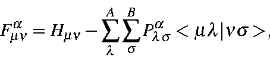
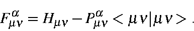
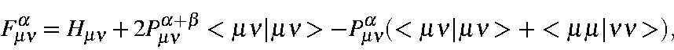
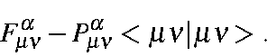
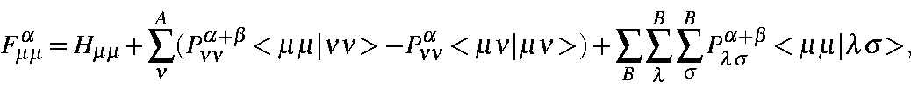
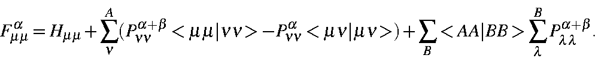

Next: One-center two-electron integrals
Up: Approximations used in
Previous: Neglect of diatomic
Neglect of three and four center integrals
Continuing with the neglect of differential overlap, all two-electron integrals
involving charge clouds arising from the overlap of two atomic orbitals on
different centers are ignored. Since no rotation can convert a two center
two-electron integral into a set of integrals involving three and four center
terms, rotational invariance is not compromised by this approximation.
Rotational invariance is present if the calculated observables [
DHf,
Dipole, I.P., etc] are not dependent on the orientation of the system. The
effects of this approximation on the Roothaan equations are as follows:
In the Fock matrix, if
fm and
fn
are on different
centers the NDDO matrix element Fmna
reduces to
,
\end{displaymath}">
while the MINDO/3 matrix element becomes:
.
\end{displaymath}">
Equivalent expressions exist for
Fmnb
and
Pmnb.
Thus no Coulombic terms are present in the two-center
Fock matrix elements.
If fm and
fn
are different but on the same center,
then, since a minimal basis set is being used, all integrals of the type
<mn|ls>
are zero by the orthogonality of the atomic
orbitals unless m = n
and
l = s,
or
m = l
and
m = s.
The off-diagonal one-center NDDO Fock matrix elements become:
 +<\mu\mu\vert\nu\nu>),
\end{displaymath}">
while the MINDO/3 element becomes:
.
\end{displaymath}">
If
fm
is the same as
fn,
then, because of the
symmetry of the two-electron integrals, the diagonal NDDO
Fock matrix elements reduce to:
,
\end{displaymath}">
and the corresponding MINDO/3 element becomes:
\sum_{\lambda}^B P_{\lambda\lambda}^{\alpha+\beta}.
\end{displaymath}">
Next: One-center two-electron integrals
Up: Approximations used in
Previous: Neglect of diatomic
J. J. P. Stewart
Fujitsu Ltd. 2001